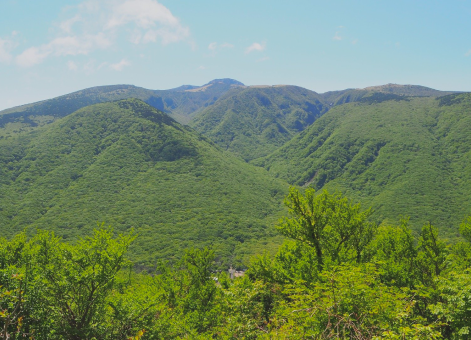

ContentArea
Video Trip
To Jeju Unesco
Jeju has all the themes of the
world's natural scenery
Jeju Island was designated a National Biosphere conservation area in 2002, a World Natural Heritage site in 2007, and received Global Geopark Network certification in 2010.
Global Geopark
-
- Udo Maritime Park
- At the far east of Jejudo Island, located 3.8km northeast from Seongsanpo Port, is Udo Island, which got its name because it looks like a cow lying down or a cow with its head up.
- Like 142
- Wishlist 1642
- Visited 5
-
- Seongsan Ilchulbong Peak
- Seongsan Ilchulbong Peak, which is 180m above sea level, erupted underwater in the ocean about 5,000 years ago, which makes it a very rare case among the many craters in Jejudo Island.
- Like 230
- Wishlist 2841
- Visited 20
-
- Cheonjiyeon Falls
- At Cheonjiyeon Falls, white water falls from the rock cliff and make a thundering sound. It gets its name because it means “sky connected with land.” It is 22m high and 12m wide, and the view and the sound that the waters create when they fall is magnificent.
- Like 70
- Wishlist 1615
- Visite 6
-
- Yongmeori Coast
- It is also a repository for plants that grow in warm climate, and it is famous as a natural habitat for Spleenwort, which is designated as a Natural Monument. It also has rich fishery resources, making it a famous fishing spot.
- Like 23
- Wishlist 749
- Visited 4
-
- Biyangdo Island
- Munseom Island is located 1.3km south from Seogwipo Port. It is a gateway to Seogwipo Port and it has a lighthouse. The island is protected as a City/Province-Designated Heritage
- Like 6
- Wishlist 110
- Visited 3
-
- Manjanggul Lava Tube
- Munseom Island is located 1.3km south from Seogwipo Port. It is a gateway to Seogwipo Port and it has a lighthouse. The island is protected as a City/Province-Designated Heritage
- Like 45
- Wishlist 1184
- Visited 1
Biosphere Reserve
-

- Hallasan Mountain
- As one of Korea’s 3 spirit mountains, Hallasan Mountain is located on the southernmost part of the Korean Peninsula, and lays claim to the title of South Korea’s tallest mountain with the height of 1,950m above sea level.
- Like 91
- Wishlist 821
- Visited 5
-
- Soesokkak Estuary
- Soesokkak Estuary, located at Hahyo-dong, Seogwipo-si, Jeju-do, used to be called “Soedun” because it looked like a cow lying down.
- Like 48
- Wishlist 1,324
- Visited 4
-
- Beomseom Island
- The island has a sea cave with 2 entrances. Legend has it that Seolmundae Halmang, an old goddess known as the creator of Jejudo Island, made this cave when she stretched her legs while lying and using Hallasan Mountain as a pillow.
- Like 4
- Wishlist 20
- Visited 5
-
- Seopseom Island
- It is also a repository for plants that grow in warm climate, and it is famous as a natural habitat for Spleenwort, which is designated as a Natural Monument. It also has rich fishery resources, making it a famous fishing spot.
- Like 2
- Wishlist 4
- Visited 4
-
- Munseom Island
- Munseom Island is located 1.3km south from Seogwipo Port. It is a gateway to Seogwipo Port and it has a lighthouse. The island is protected as a City/Province-Designated Heritage
- Like 91
- Wishlist 821
- Visited 5